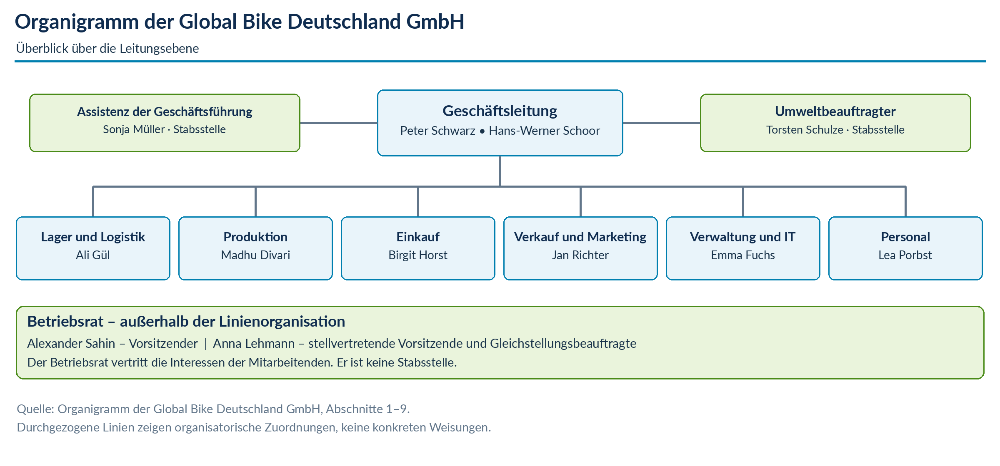

M3 – Das Organigramm der Global Bike Deutschland GmbH
Grundwissen – erste Orientierung
Global Bike ist nach betrieblichen Aufgabenbereichen gegliedert (funktionale Organisation). Ein Organigramm stellt die Aufbauorganisation grafisch dar. Die Hierarchie beschreibt die Über- und Unterordnung der Stellen. Beginnen Sie mit der Leitungsebene.


| Unternehmensbereich | Leitung | Aufgaben des Bereichs |
|---|---|---|
| Lager und Logistik | Ali Gül | Warenannahme und Wareneingangskontrolle; Lagerhaltung und Bestandsführung; Versand und Auslieferung; Fuhrpark |
| Produktion | Madhu Divari | Produktionsplanung und -steuerung; Konstruktion und Design; Fertigung und Montage; Verpackung; Qualität |
| Einkauf | Birgit Horst | Bedarfsermittlung; Lieferantenauswahl und -bewertung; Preis- und Vertragsverhandlungen; Beschaffung |
| Verkauf und Marketing | Jan Richter | Kundenbetreuung und Akquise; Absatzplanung und Vertriebssteuerung; Marketing; Auftragsbearbeitung; Ladengeschäft |
| Verwaltung und IT | Emma Fuchs | Kaufmännische Verwaltung; Rechnungswesen und Buchhaltung; IT- und Netzwerkbetreuung; organisatorische Unterstützung |
| Personal | Lea Porbst | Personalverwaltung; Ausbildung und Personalentwicklung; arbeitsrechtliche Fragen; Betreuung der Mitarbeitenden |
| Geschäftsleitung und Stabsstellen | Aufgaben |
|---|---|
| Peter Schwarz und Hans-Werner Schoor – Geschäftsleitung | Strategische Ausrichtung; Investitions- und Grundsatzentscheidungen; Produkt- und Sortimentspolitik; wirtschaftliche Steuerung und übergreifende Koordination |
| Sonja Müller – Assistenz der Geschäftsführung | Administrative und organisatorische Unterstützung; Termine und Kommunikation koordinieren; Entscheidungen und Besprechungen vorbereiten |
| Torsten Schulze – Umweltbeauftragter | Umweltmanagement; Nachhaltigkeitsmaßnahmen; Umweltauflagen; umweltfreundliche Produktions- und Logistikprozesse weiterentwickeln |
Eine Stabsstelle unterstützt eine Leitung durch besondere Fachaufgaben oder Beratung. Sie hat dadurch nicht automatisch eine allgemeine Weisungsbefugnis gegenüber anderen Unternehmensbereichen.
Gezieltes Nachschlagen – vollständiges Organigramm

Lager und Logistik – Leitung: Ali Gül
- Elias Schmidt – Logistik / Warenannahme
- Jonas Wagner – Versand
- Linus Schneider – Fuhrpark
Produktion – Leitung: Madhu Divari
- Michael Schulz – Produktionssteuerung / Logistik
- Noah Hoffmann – Konstruktion / Design
- Pablo Temperini – Metallbau
- Lukas Koch – Montage
- Simon Bauer – Verpackung
Einkauf – Leitung: Birgit Horst
- Kevin Strauss – Werkstoffe
- Alexander Sahin – Handelswaren
Verkauf und Marketing – Leitung: Jan Richter
- Christian Klein – Absatzlogistik
- Sebastian Wolf – Außendienst
- Sarah Huber – Marketing
- Emil Werner – Auftragsbearbeitung
- Melissa Teichert – Ladengeschäft
- Katharin Fleischer – Ladengeschäft
Verwaltung und IT – Leitung: Emma Fuchs
- Lina Peters – Sekretariat
- Lena Lang – Sekretariat
- Paul Kühn – Rechnungswesen
- Tim Struppe – PC- und Netzwerkbetreuung
Personal – Leitung: Lea Porbst
- Selina Pfeiffer – Personalsachbearbeiterin
- Elisabeth Cicek – Personalsachbearbeiterin
Betriebsrat: Alexander Sahin – Vorsitzender; Anna Lehmann – stellvertretende Vorsitzende und Gleichstellungsbeauftragte. Der Betriebsrat vertritt die Interessen der Mitarbeitenden. Er steht außerhalb der Linienorganisation und ist keine Stabsstelle. Alexander Sahin ist zugleich im Einkauf tätig; seine beiden Funktionen sind zu unterscheiden.
Beispiel – gezielt nachschlagen
Für eine technische Konstruktionszeichnung ist Noah Hoffmann (Konstruktion / Design) im Produktionsbereich ein geeigneter Ansprechpartner. Madhu Divari leitet diesen Bereich. Eine konkrete technische Freigabebefugnis geht aus dem Organigramm nicht hervor.
Genauer betrachtet
Das Organigramm zeigt organisatorische Zuordnungen, aber nicht alle individuellen Dienstwege, Freigabegrenzen oder Entscheidungsrechte. Die folgenden Fragen helfen: Welche Aufgabe liegt vor? Zu welchem Bereich gehört sie? Welche Stelle passt dazu? Was lässt sich über die Befugnisse tatsächlich erkennen?
Merke: Erst den passenden Bereich finden, dann die Funktionsrolle nachschlagen. Namen und alle Rollen müssen nicht auswendig gelernt werden.